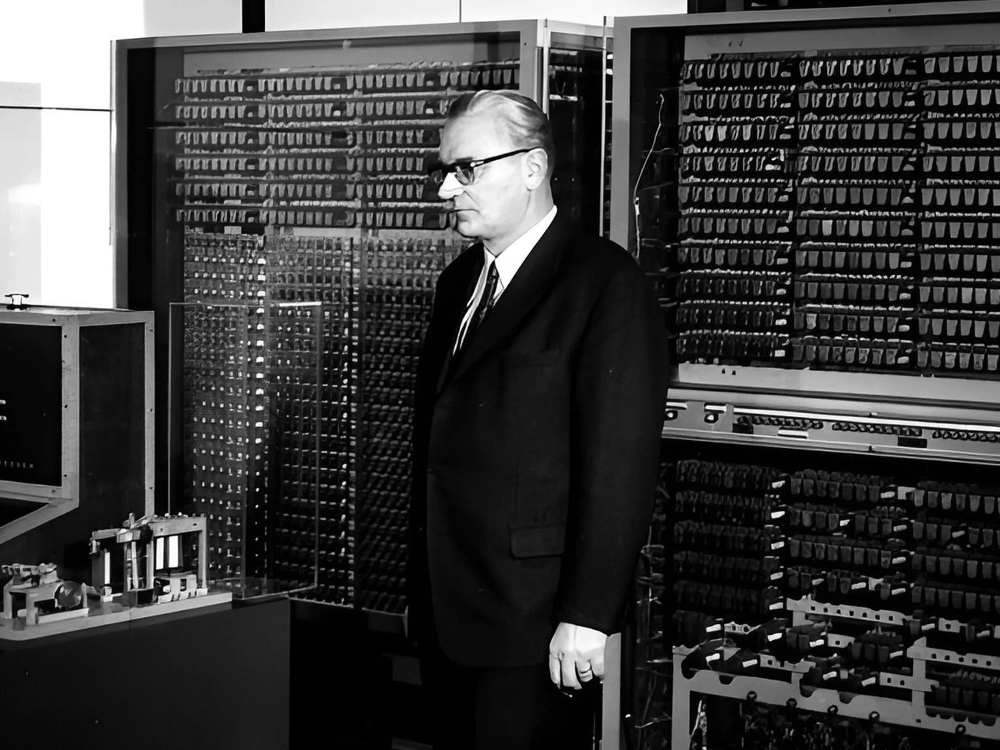

A language invented so that programmers would no longer be needed spawned a profession that is alive to this day and pays quite well; another language was called "structured English", and people thought any accountant would be able to write in it, and it too spawned a new specialty with its own salary band. And there was also an attempt to deliver "programming without programmers by the year two thousand", and it gave the opposite result as well.
I think you recognized COBOL, which is still in daily production use and, by various estimates, sits behind 80% of ordinary (in-store) banking transactions, while its codebase runs to a couple of hundred billion lines and still feeds tens, if not hundreds, of thousands of developers. Although, if you dig into those pretty numbers, almost all of them trace back to a single survey from the late nineties that was then endlessly re-extrapolated onto the whole world, so it is more honest to treat them as an order of magnitude rather than as precise data.
SQL spawned the peculiar caste of DBAs (Database Administrators) and Data Engineers, and today a person who writes "simple queries" can easily earn at a mid-level rate, while the language itself has become so complex that modern dialects (PostgreSQL, Oracle) are full-blown programming languages with procedural logic, where you can write absolutely anything, from a fractal generator to a game engine.
The 4GL family turned out to be a "golden cage" and worked beautifully as long as you needed to build a typical "input-output" form, but as soon as non-standard business logic or an integration with an external service was required, the tool hit its limits and programmers had to bolt on "crutches" in low-level languages, which turned development into a hellish cocktail of visual design and dirty hacks. And instead of programmers disappearing, 4GL created "enterprise system architects" who (SAP ABAP, for example) became insanely expensive specialists, and it did not eliminate programming either, it merely moved it out of the zone of "general-purpose languages" and into the zone of "expensive and temperamental tools" that lock a company to a particular vendor.
Every ten to fifteen years the industry solemnly announces that writing code by hand will no longer be necessary, selling a new way to "explain the task to the machine in plain human language". And every time, a few years later, it turns out that there are not fewer programmers but more, they are just called something else now. I would venture that right now we are living through another turn of this cycle, and the new name for such people will be vibe coders, and I think this tool is destined for the same fate as the previous attempts.
The idea of "talking to a machine in human language" is older than the very notion of a computer; the science fiction of the first half of the twentieth century is full of it, from Fritz Lang's "Metropolis", which will be a hundred years old any minute now, with its mechanical double of a human being, to stories where the machine is given orders by voice and obediently carries them out. But as soon as real computing machines appeared in the forties, it turned out that the problem is not the machine.
Konrad Zuse, who built the Z3 in forty-one and came up with one of the first high-level languages (Plankalkül), framed the problem like this: "it is not so dangerous that computers will become like humans, but that humans will become like computers". Many developers I know quite seriously consider programming languages to be just a worse version of English; I won't argue with them... It is not a "bad version of English", it is a tool with fundamentally different properties, no worse than natural language and no better, it is simply about something else.

What a programming language actually does
What does the phrase "calculate the quarterly bonuses for the employees" mean to an accountant? Early in my career I ended up at a small outfit that was breeding entropy in this world by writing something like a 1C engine for payroll, so I got to touch this swamp a little. For a live human being that phrase was enough to reconstruct dozens of defaults: who exactly gets a bonus, by which formula, what to do about people who joined mid-quarter, what about those who quit, whether to round and in which direction, in what currency, what to do if there is no data for a person at all. Natural language works precisely because the listener plugs those holes with context, common sense and general knowledge, of which they have plenty, because they work in that field.
A program, precisely a program, code... cannot do that. Every one of those decisions has to be pinned down somewhere, propped up, spelled out as a procedure, otherwise the result comes out non-deterministic, and non-deterministic accounting is no longer accounting but grounds for a conversation with the tax office. And often even experienced accountants could not take everything into account at once, so a short phrase in natural language unfolds into something like this:
"calculate the quarterly bonuses"
▼
- which quarter exactly (calendar? fiscal? counted from the hire date?)
- who is included (staff? part-timers? those who quit mid-quarter?)
- the accrual base (base salary? salary + overtime? average for the period?)
- the formula (a percentage? a fixed sum? a progressive scale?)
- proration for a partial quarter (by days? by months? none at all?)
- rounding (half-up? down? to the ruble? to the kopeck?)
- currency and exchange rate (as of which date do we take the rate?)
- missing data (skip it? treat it as zero? fail with an error?)Eight other questions out of one, and I was being lazy at that, and every question spawns more questions, and once a question stops spawning other questions, it can be described in the terms of programming languages.
A programming language exists not in spite of this tedious precision but for its sake, because it gives you a syntax in which ambiguity is physically inexpressible, and semantics in which the same program always means the same thing. A programmer who "translates" the wishes of a manager and an accountant into code is in fact not busy translating a spec into code, but takes on those eight or more questions and assumes responsibility for the answers.
Just say it in plain...
does not work. There are reasons why "natural language instead of code" runs into a ceiling, and they are about us... humans, not about the tools, compilers, standard libraries or the limitations of existing programming languages, and the main one is the irreducible ambiguity of natural languages.
What would you do if you were asked to "delete all files older than 30 days in this folder"? Most likely you would just select the files by modification date and delete them... it looks like a simple action, but you have just used your experience to answer 90% of the sub-questions. And there are quite a few of those sub-questions once you start formalizing the base one:
— Older by creation date or by modification date?
— Do we touch the subfolders and the files in them?
— Do we delete hidden files?
— And symlinks: do we delete the link or the file itself?
... and so on
To remove the ambiguity you either have to ask a pile of clarifying questions and thereby effectively write the specification (the program's code) in words, or make the decisions on behalf of whoever asked and possibly do something other than what they wanted. Programming languages resolve the sub-questions that arise with brute logic, because every construct has exactly one meaning, and mtime never suddenly turns into ctime.
But even having answered every question and every related question precisely, we run into Rice's theorem, a rather boring mathematical treatise from 1953 with a joyless practical corollary for us humans, which goes like this: no non-trivial semantic property of a program can be checked algorithmically in the general case. That is, you cannot automatically guarantee that the generated code does exactly what was asked, which means somebody has to check what came out. And to check it you have to read the code, and to read the code you need a formal language. The circle is closed.
Indirectly one more property crawls out, no longer about Rice but about natural language itself. The more complex a composition we want to build, the worse it maps onto words. In plain terms it sounds like this: a small function can be described in words, and it will even come out decent and clear, but a million-line system cannot be described in words, and it is not that there are not enough words, natural language simply does not compose, and meaning can overlap, flow from sentence to sentence or depend on neighbouring sentences, capturing paragraphs and sometimes larger stretches of the text.
What follows is a difficult block, I will hide it under a spoiler, and if linguistics is not your thing you can scroll to the next section, the idea is repeated there through things and comparisons a developer will understand.
But if you are curious where this "irreducibility to words" comes from at all, linguists described it long ago and in detail, long before any AI. They tried to formally write down and compute the meanings of an ordinary human phrase, and discovered that the meaning of a sentence cannot be computed by looking at the sentence alone. No text in natural language can be carried over as is into other forms of representation without losing context or the meaning of individual parts. The process of carrying it over requires doing some work to split the shared context into parts, an assessment of the essential complexity of the task.
A programmer is in this state before writing any code; it is called... drum roll... analysis paralysis (sometimes also called Brooks's stupor, as the process of overcoming that very essential complexity). The idea of "just tell the machine in words" stumbles over this state, and so does the top-down "here is a spec in words, go write a program in...", so it is worth taking a look at what has been dug up over forty years.
About Rice, Kamp and DRT
But natural language has another affliction, and this one is not about Rice. The sentences themselves may be built illogically, tripled up, smudged and back-to-front invented, twisted and tangled, cut inside out and woven every which way, so that there is more than one path in that garden of words, and the paths there fork right in the middle of the phrase, and you realize it only once you have read to the end, or even reread from the beginning. Not that I was ever a great linguist, but at the end of the tens I had to extend a profanity filter in one of our apps, and in the great and mighty Russian tongue one could tell someone off in a great many ways, so I had to touch on this topic a little as well. But let us get back to our sheep... that is, our words.
As long as we speak in small phrases like "delete the file", everything is fine and the phrase fits into your head whole and does not drag a tail of context behind it. But try to describe something more complicated in words, and it turns out that the words start to "get in each other's way" or "depend on each other" across sentence boundaries, whereas a variable in a normal programming language should depend only on the precise context where it is used.
The classic phrase "every farmer who owns a donkey beats it" is understandable to any English speaker and usually reads without a hitch. Now try to break it into parts and preserve the meaning of each part separately, the way a compiler does with an expression.
"Who owns a donkey" now merely asserts the existence of a donkey belonging to some farmer, while "beats it", taken apart from everything else, gives no clue at all as to who is being beaten, because "it" shows up after "donkey" has already flickered by and formally gone out of scope.
A human does not notice this, because they hold the whole chunk in their head and reconstruct that connection on the fly, whereas a function that computes the meaning of a sentence piece by piece from left to right, the way any normal parser does, will either break or be so complex that there is no point talking about applying it in practice.
For a programmer this would be a variable declared inside one function and yet visible in the next one too, without being passed explicitly and without global, because somewhere the usage context got snagged. No language allows that, and scopes were invented precisely so that such a thing would be impossible by design, whereas natural language lives on exactly this: its "donkey" leaks across the sentence boundary, and that counts as normal behaviour.
The context leak was described by linguists long before any AI: Hans Kamp in the early eighties in his work on dynamic semantics and, almost simultaneously, Irene Heim in her dissertation on file change semantics; both independently ran into the fact that the meaning of a sentence cannot be computed without dragging along what was said earlier.
That is how discourse representation theory, DRT, was born, whose single practical conclusion for us programmers sounds boring and inapplicable, because in its "natural habitat" it works outside DRT. You cannot formally guarantee that a piece of text can be understood in isolation from the neighbouring pieces, which means you also cannot demand of the language you use to explain a task to a machine that it behave like code while remaining natural language.
A programmer's natural habitat is Code, and Code is free of this disease, and the call calculateAge(1985, 2026) means one and the same thing whether you stick it into a game loop or into a report for the tax office, and it drags no invisible tail of previous lines that change its meaning.
And a programmer's job is to assemble a Big System out of independent pieces, and that is possible only if the pieces do not change their meaning depending on where you put them, and natural language is fundamentally incapable of that, the state of a small sentence of its own drifts with the size of the context you shove it into. Hardly anyone would be pleased if the result of sum(a + b) suddenly started depending on the length of the calling function.
I hope I have not worn you out too much with this discourse?
If you are still curious about DRT
To start with, you can look at the Stanford Encyclopedia of Philosophy articles "Discourse Representation Theory" and "Dynamic Semantics", they are free, proofread by specialists and written in accessible language, unlike Kamp's original.
The next level is the primary sources, the paper "A Theory of Truth and Semantic Representation" and Irene Heim's dissertation "The Semantics of Definite and Indefinite Noun Phrases". It is worth at least leafing through them to see that this is not esoterica but an attempt, in the pre-AI era, to build that very "function over context".
All this literature really is hard, and to a non-specialist it looks like watery water in a bucket of water, but note what it took to formally describe just one level of the mental representations (DRS) of natural-language semantics, and even that does not close out the theory of language as a whole.
Modern large language models are not built on DRT, they are statistical transformers rather than Kamp's theory, so this is not the foundation of AI but the story of why functions over context run into such complexity and terabytes of RAM just so you can ask a model for Lenin's birthday. And also to understand why the idea of making natural language a precise specification language looks naive. That is what vibe coders are selling right now as the dream of "English instead of code"
This has been tried before. More than once...
History knows several major runs at the theme of "let's get rid of programmers through a language close to English". Funnily enough, every one of them produced the same side effect: the old programmers stayed, but new specializations were born, giving work to a new generation of programmers.
COBOL (1959) was created with the goal of letting managers and business analysts read and write programs. That is why the syntax was deliberately made to look like English sentences, ADD SALARY TO TOTAL GIVING NEW-TOTAL reads like an almost ordinary sentence, well, ordinary over there in the Americas. The result was the profession of the COBOL programmer, which is alive to this day and still runs a fair chunk of banking and government systems, as I said at the beginning of the article. And the managers, characteristically, never did start writing in it, and went on writing their reports by hand, in Word, as tables and diagrams, and handing out assignments, now to COBOL developers.
Then came the era of SQL (1974), which was originally called SEQUEL, that is, Structured English Query Language, and was named that precisely because it was supposed to let non-technical people ask a "program" questions in almost-English. Later it was renamed to SQL for advertising and money reasons, but the intent of "English for queries" stayed sewn right into the name. Today an SQL developer is a separate profession, and the "non-technical manager person" who runs into a LEFT JOIN with three subqueries and a window function usually goes off to look for a technical one who understands this three-storey, great and mighty construction.
Then there were 4GL and CASE (Computer-Aided Software Engineering, the eighties), which are considered fourth-generation "natural programming languages", and once again promised "programming without programmers". The advertising blared from every iron and was so powerful that at the end of the eighties many genuinely feared the empty-office effect, where most applications would be created without writing code and developers would head en masse for the "free register". But again, by the year two thousand the industry had not only failed to get rid of programmers, it had acquired a whole galaxy of new highly paid specialists in SAP, Oracle and proprietary frameworks.
It turned out that the "naturalness" of 4GL systems was the same illusion as COBOL and SQL before it, merely hiding a monstrous configuration complexity and unpredictable system behaviour behind a facade of visual blocks. The more the CASE tools tried to automate writing code, the more time programmers spent fighting the limitations of those very tools, turning from creators of logic into "architects of system integrations", and in the end, instead of developers disappearing, we got a shortage of them, while "programming without programmers" simply moved to a different plane, where now, instead of writing code in C++ or Pascal, you have to learn to understand the "secret knowledge" of a particular vendor, turning the visual builder into yet another, albeit very expensive, programming tool.
Genuinely expensive, because the salary of an ordinary SAP developer easily flies past $100k plus training plus annual exams, and on top of that comes training at $Xk and mandatory yearly recertification, without which the certificate simply goes stale, and all of it is tied to the vendor's own paid subscription.
Then came the turn of UML and Model-Driven Architecture (the nineties and the noughties) with the beautiful idea of drawing diagrams that would generate code. In practice UML survived as a documentation tool and a diagram for developers who then write the code by hand anyway, and sometimes draw the diagrams from code that has already been written, which sort of hints at something. Then there was much less money in UML, and the people who had been selling Model-Driven Architecture moved en masse in the early tens into No-Code and Low-Code startups and outfits of every kind and size, which also sort of hints at something.
Bubble, Webflow, OutSystems and Mendix started selling anyone who wanted it the line "now any business will assemble an application for itself", and in practice it came down to standard tasks, forms, CRUD interfaces and automations, with their own trainers, schools, tools and support. But again, as soon as you need non-standard logic, an integration or performance, you have to pile up crutches out of blocks inside the platform, or hire a developer who knows that specific platform and can write "ordinary" code in C++/Java/Swift/pick your own. That is, there appeared, surprise... one more specialization. It turned out that the industry which was selling the dream of "you don't need a developer any more" is, for a modest profit, selling the certificate of "I am a developer for this thing" on the side. And then came the turn of the LLM...
You are here, and this one differs qualitatively from the previous ones, because for the first time the tool started working with arbitrary natural language rather than with a limited DSL made of blocks, diagrams and special words. That is a very big leap, comparable to COBOL/SQL/UML and the rest, and I say that without any irony. But the fundamental limitations of ambiguity, verifiability and reproducibility have not gone anywhere, because they are not about the tool but about the nature of the task. Somebody still has to state the task, state it precisely and in small portions, read the generated code and answer for what that code is going to do in production at three in the morning.
If you look back at this list, you will see that every wave really did kill off some layer of manual work, but every wave also created a new layer of work on top of itself.
The Jevons paradox
In 1865 William Stanley Jevons noticed that the more efficient steam engines became and the less coal each of them needed to produce a unit of work, the more coal was consumed overall, because the now cheaper unit of work opened up so many new applications that the total volume of work needed grew.
Every time a tool makes writing code cheaper, demand for software grows faster than the cost of producing it falls. That is how the number of programmers grew from a few thousand in the early fifties to hundreds of thousands in the nineties, millions in the two thousands and tens of millions today, and that is despite the fact that a modern developer with a framework, an IDE, a package manager and search...
Sometimes ships by mistake in a single day as much as a colleague from the last century would write over days and months, because the productivity of an ordinary programmer has grown by orders of magnitude, and their workload has grown too, because cheap code made projects worthwhile that nobody would have started before. So if your intuition tells you "the tool does the work for me, therefore there will be less work", Jevons has some bad news for you, and it is a hundred and sixty years old.
What actually changes
None of the above means, however, that nothing changes — it does change, and quite a lot, just not in the direction we see. The bottom of the market is going away: boilerplate code, simple CRUD systems, markup and boilerplate generation, all that work where the solution is already known and just needs to be typed out. Here the neural nets are genuinely good.
But the top is growing: designing systems, understanding the domain, debugging, performance optimization (one of the areas where even the almighty Claude floats like an axe and crapclaudes away, so you barely keep up rejecting the commits), security, and embedding components into systems that are obliged to work predictably. Somebody has to check what the generator's generator generated with a generator, right? And that somebody has to understand the System, no, not even the Code... more deeply than the one who generated it, because the one who generated it runs into Rice's theorem and Kamp's work.
You could say that the boundary of "what the machine can do" is shifting, and fast, but the boundary of "what the business needs" is shifting even faster. Programmers do not disappear in this environment, but the composition of their work changes, there is less typing with your hands now, more thinking, and you still answer for everything.
Is programming immortal
What keeps programming languages afloat is not syntax, developers' habits or the industry's resistance to change, although there is plenty of resistance too. Programming languages solve a task that natural language (whatever tool you wrap it into) is fundamentally unsuited for, neither as diagrams, nor as md files or plans, nor as a dialogue with Claude. A programming language unambiguously describes the behaviour of systems that are obliged to work predictably.
As long as there exist systems for which "approximately right" means losing profit, losing time or taking damage, and that is roughly all banks, all of medicine, all of aviation and possibly most ordinary businesses, a formal way to describe what exactly they must do will be needed. That formal way is the programming language, however it may look by 2050, whether as text, as voice or as a thought straight out of your head.
A machine that accepts "I want a million dollars" and magically delivers is still a science-fiction plot from the beginning of the last century rather than engineering reality, because somebody will have to tell the machine where that money comes from, in which currency, which account to transfer it to and what to do if, instead of money, some lads in short jackets turn up. That somebody is the programmer, except for the case with the lads, regardless of whether he types transfer(amount, account) by hand, chats with a bot or dictates to an assistant by voice.
I am leading you to the conclusion about what has always been the foundation of the programmer's profession. Vibe coding did not remove the need to state the task precisely, it merely shifted the moment when you pay for imprecise wording. And so it turns out that the problem has once again not been solved, and it cannot be solved, but, as usual, it can be pushed up to the level of a technical person, only now they will be called something else, Senior Opus Engineer, for example, and in ten years or so somebody on Habr will write an article about where this new profession with its own salary band came from. Agreed?
← All articles